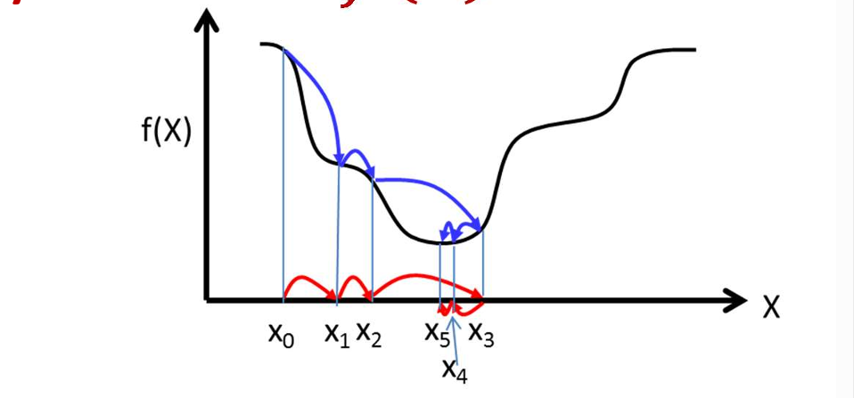

Most machine learning algorithms learn by minimizing a loss function $L(\theta)$ that measures how wrong the model is, where $\theta$ denotes the model parameters. Two separate ideas make this work: (1) computing the derivative (gradient) of the loss with respect to every parameter, and (2) Gradient Descent, the optimization rule that uses those derivatives to update the parameters and reduce the loss. Gradient Descent itself is generic: it only needs $\frac{\partial L}{\partial \theta}$ and does not care which model produced it. How that derivative is obtained depends on the model.
Gradient Descent is the cornerstone of mathematical optimization and the backbone of many ML algorithms, such as Linear/Logistic Regression and Support Vector Machines (SVMs). It is also the "learning engine" of Neural Networks and every major deep learning architecture (CNN, RNN, LSTM, Transformers/LLMs). In this tutorial we first present Gradient Descent in its generic form, then show how the gradient is computed, using Linear/Logistic Regression as simple examples and Backpropagation in a neural network layer as the worked example.
The generic optimization framework used to train machine learning models:

Figure: Visualization of the Gradient Descent "landscape" and optimization path.Blue Lines (Path on the Error Surface): These represent the steps taken along the actual function or "landscape" ($f(x)$). They visualize how the error value changes as the algorithm moves from one state to the next.Red Lines (Path in the Parameter Space): These represent the updates made to the variable $x$ (such as weights or biases) on the horizontal axis. They show the physical distance and direction the algorithm moves in the parameter space during each iteration.
$f(x)$ (The Objective/Loss Function): This represents the "landscape" or the error. In machine learning, $f(x)$ measures how far off your model's predictions are. Our goal is to find the value of $x$ that makes $f(x)$ as small as possible. $x^k$ (Current State): This is the value of your parameters (like weights) at step $k$. $\frac{\partial f}{\partial x^k}$ (The Gradient): This is the derivative. It tells you the slope and the direction of the steepest ascent(See the Figure above). $\eta$. This derivative computation is the central part of Back Propogation algorithm (Learning Rate / Step Size): This determines how large of a step you take. If it's too large, you might overstep the bottom; if it's too small, the hiker moves too slowly. $\epsilon$ (Epsilon/Tolerance): This is your "stopping condition." Since the algorithm might never reach the exact zero, we stop when the change in error becomes so tiny that it’s no longer worth calculating. Learning rate/Step size and epsilon are parameters set externally. There are many such parameters in the advanced versions of Gradient Descent. We should discuss separately about these parameters later.
The algorithm above describes Generic Gradient Descent. In a machine learning model, the variables represented by $x$ in the formula are the model parameters, collectively written as $\theta$ (for example, the coefficients and intercept in Linear Regression, or the weights ($W$) and biases ($b$) in a Neural Network). Hence, we write the differentiation of the Loss function with respect to $\theta$ as $\nabla_\theta L$, and the generic update becomes $\theta \leftarrow \theta - \eta \, \nabla_\theta L$.
These parameters are the variables of the Loss Function. During training, the Derivative is computed specifically with respect to these weights. This tells the model exactly how to "nudge" each parameter to minimize the error.
Because calculating these derivatives for every weight across the entire dataset at once is memory-intensive, we use three main implementations:
Batch Gradient Descent (BGD) is the most straightforward and deterministic version of the gradient descent algorithm. In this approach, the model calculates the error for every single example in the entire training dataset before any weights are updated.
Because it aggregates information from the whole data collection at once, the resulting gradient is a very stable and accurate representation of the overall error surface. This allows the algorithm to follow a smooth, direct path toward the minimum, avoiding the "jittery" or erratic movements seen in stochastic methods. However, this precision comes at a high cost: it is extremely slow and requires immense memory to store the gradients for the entire dataset simultaneously.
Stochastic Gradient Descent (SGD) is a powerful and widely used optimization algorithm in machine learning designed to minimize a model's loss function. Unlike Batch Gradient Descent, which computes the gradient using the entire training dataset for every single update, SGD performs parameter updates using only a single training example (or a small "mini-batch") at each step.
This makes the algorithm significantly faster and more memory-efficient, especially when dealing with massive datasets that cannot fit into memory. Because the gradient is calculated based on just one sample, the updates are often "noisy"—meaning the loss doesn't always decrease smoothly in every step. However, this randomness is actually a feature: it helps the algorithm "jump out" of local minima or saddle points, often leading to a better overall solution in complex, non-convex landscapes.Mini-Batch Stochastic Gradient Descent (Mini-batch SGD) is the most common variation of gradient descent used in modern deep learning because it strikes a perfect balance between Batch Gradient Descent and pure SGD.
Instead of using the entire dataset (which is slow) or just a single data point (which is noisy), this algorithm divides the training data into small, manageable groups called mini-batches (typically in powers of two, like 32, 64, or 128). By calculating the gradient based on these small groups, the algorithm benefits from the computational efficiency of vectorized operations on modern hardware like GPUs, while still maintaining enough "noise" to help the model escape local minima. This results in smoother convergence than pure SGD and significantly faster training times than Batch GD.
Gradient Descent needs $\nabla_\theta L$, but it does not say how to compute it. This depends on the model:
| Model | Loss $L$ | Gradient $\nabla_\theta L$ | How it is obtained |
|---|---|---|---|
| Linear Regression | $\frac{1}{N}\|Xw - y\|^2$ | $\frac{2}{N} X^T (Xw - y)$ | Closed-form derivative |
| Logistic Regression | Cross-entropy | $\frac{1}{N} X^T (\sigma(Xw) - y)$ | Closed-form derivative |
| Neural Network | Any differentiable loss | $\frac{\partial L}{\partial W_i},\ \frac{\partial L}{\partial b_i}$ for every layer $i$ | Backpropagation (chain rule, layer by layer) |
A neural network is a long chain of nested functions, so its gradient is not a single closed-form expression. Backpropagation applies the chain rule backward through the layers and reuses intermediate results, which gives the derivative for every weight in one backward sweep. Whatever model or method supplies $\nabla_\theta L$, the optimizer (Gradient Descent, SGD, Mini-Batch SGD, Adam, ...) then uses it in the same way. The rest of this section works through Backpropagation for a single layer of a neural network.
During Backpropagation, we receive $\frac{\partial L}{\partial A_i}$ from the layer ahead. We then perform three specific differentiations:
We "undo" the Sigmoid function to find how the loss changes with respect to $Z$.
dZ = dA * sigmoid_derivative(A)
In Step A, we found $dZ$ (the error signal). Now, we calculate exactly how to adjust the weights to reduce that error.
Since $Z_i = W_i \cdot A_{i-1} + b_i$, the partial derivative of $Z_i$ with respect to $W_i$ is simply the input $A_{i-1}$. This means the weight's contribution to the error is directly proportional to the signal it carried.
Formula: $$\frac{\partial L}{\partial W_i} = dZ_i \cdot (A_{i-1})^T$$
dW = (1/m) * np.dot(dZ, A_prev.T)
Why the Transpose ($T$)? To align the dimensions of our matrices. For a single weight $w_{jk}$, the gradient is $dZ_j \cdot a_k$. The dot product with a transpose calculates this for every weight in the layer at once.
We "pass the baton" backward to the previous layer.
dA_prev = np.dot(W.T, dZ)
Figure shows Gradient flow back to the network. Arrows point backward; the label on each connection is the derivative of the loss with respect to it.
# Backward pass through layer i (3 inputs a_k -> 2 neurons z_j), as in the figure
# Inputs : dA = dL/dA_i from layer i+1 / loss (purple arrows)
# W, b = layer weights (2x3) and biases (2)
# A_prev = A_{i-1} (3,) Z = W @ A_prev + b (2,)
def backward_layer(dA, W, b, A_prev, Z, eta):
# Step A (red): dL/dZ_j = dL/dA_j * sigma'(Z_j)
s = sigmoid(Z)
dZ = dA * s * (1 - s)
# Step B (orange): derivative on every connection a_k -> z_j
dW = np.zeros_like(W)
for j in range(2): # z_j
for k in range(3): # a_k
dW[j, k] = dZ[j] * A_prev[k] # dL/dw_jk
db = dZ # same as np.outer(dZ, A_prev) for dW
# Step C (blue): gradient sent back to the previous layer
dA_prev = W.T @ dZ # dL/dA_k = sum_j w_jk * dZ_j
# Gradient descent update (uses the derivatives on the connections)
W -= eta * dW
b -= eta * db
return dA_prev # becomes dA for layer i-1Each derivative $\frac{\partial L}{\partial w_{jk}}$ on a connection is one component of $\nabla_\theta L$, so the last two lines of the algorithm are exactly the generic update $\theta \leftarrow \theta - \eta \, \nabla_\theta L$ applied to the weights and biases.
Each layer calculates its own local derivative and multiplies it by the one it received:
| Derivative | Math Symbol | NumPy Variable | Purpose |
|---|---|---|---|
| Output Error | $\frac{\partial L}{\partial A_i}$ | dA |
The error signal received from the next layer. |
| Activation Grad | $\frac{\partial L}{\partial Z_i}$ | dZ |
The error signal filtered through the activation function. |
| Weight Grad | $\frac{\partial L}{\partial W_i}$ | dW |
The final differentiation used to update weight values. |
| Input Grad | $\frac{\partial L}{\partial A_{i-1}}$ | dA_prev |